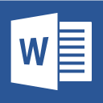
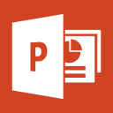

-
Selamat Datang Di ToMsOffice
(Tutorial Ms. Office 2013)




Frequently asked questions :
-
Apa itu TomOffice?
TomsOffice adalah Singkatan dari Tutorial Microsoft Office,
Aplikasi Ini Berisi Video Tutorial Tentang Penggunaan Dasar Beberapa
Aplikasi Ms. Office Seperti, Ms. Office Word, Ms. Office Power Point, Ms. Office Excel
-
Apa Saja Isi Dari Tutorial di TomsOffice?
Aplikasi Ini Berisi Video Tutorial Tentang Penggunaan Dasar Beberapa
Aplikasi Ms. Office Seperti, Ms. Office Word, Ms. Office Power Point, Ms. Office Excel
-
Apakah Aplikasi TomsOffice Menyediakan Tutorial Selain Tutor Ms.Office?
TomsOffice Fokus Untuk Menyediakan Tutorial Ms. Office, untuk versi Newbie ini,
TomsOffice Hanya Menyediakan 3 Kategori Tutorial, Untuk Versi Selanjutnya
Toms Akan Menyediakan Tutorial Ms. Access, Ms. Outlock, Dan Penggunaan Sky Drive Pada Windows 8.1
-
Apakah Aplikasi Ini Hanya Untuk Tugas Tim Anda Saja?
Awalnya, kami mendevelope/mengembangkan aplikasi ini hanya untuk
menunjang tugas kuliah saja, tapi insyaallah akan kami kembangkan
dengan konten dan fitur yang lebih lengkap, jadi minta dukungan dan ratenya di playstore ;p
-
Dari Mana Tim Pengembang TomsOffice Ini?
Tim Pengembang ToMs.Office Merupakan Mahasiswa Politeknik Negeri Jakarta yang sekarang (2014) adalah Mahasiswa Tingkat 2, di Politeknik Negeri Jakarta Kampus Kerjasama Dengan BBPLKLN (Balai Besar Latihan Kerja Luar Negeri) Cevest-Bekasi
-
Apakah ToMs.Office Di Publish Atas Nama Warnai Kreasi Media?
Iya, Karena Salah Satu Tim kami adalah owner dari Warnai Kreasi Media, Yang Bergerak di bidang development Aplikasi Mobile dan Aplikasi Desktop di Bawah Naungan Warnai Kreasi Indonesia, website warnai : http://warnai.co.id
-
Siapa itu Warnai Kreasi Media?
Warnai Kreasi Media, Merupakan Salah Satu Divisi Dari CV. Warnai Kreasindo yang bergerak di bidang aplikasi dan multimedia kreatif. Warnai Kreasindo adalah perusahaan yang bergerak di bidang Teknologi Informasi dan Komunikasi yang sebagian Timnya adalah Mahasiswa dan Siswa SMA/SMK di Indonesia yang mempunyai kemauan keras dalam mengembangkan Teknologi Informasi di Indonesia.
Copyright © 2014. TomsOffice
TUTORIAL
ABOUT US